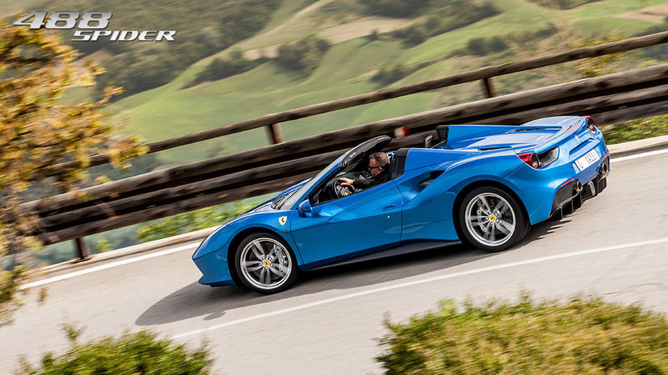
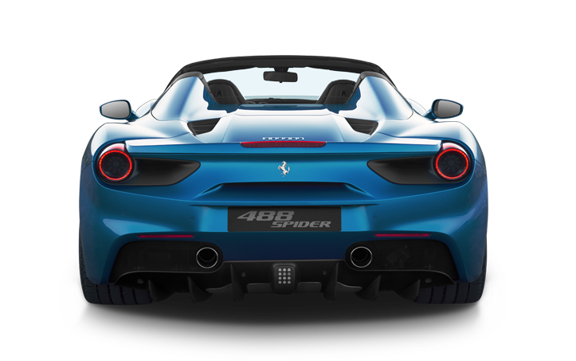
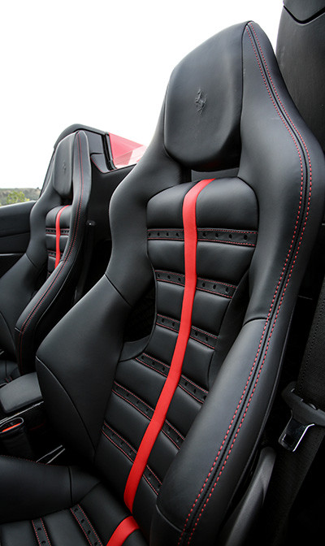

OVERVIEW
POWERFUL PERFORMANCE
AND EFFORTLESS DRIVING

THE FERRARI
488 SPIDER IS THE LATEST CHAPTER IN
MARANELLO’S ONGOING HISTORY OF OPEN-TOP
V8 SPORTS CARS, A STORY THAT STARTED
WITH THE TARGA-TOP VERSION OF THE 308
GTB - THE IMMORTAL 308 GTS - AND WHICH
ULTIMATELY RESULTED IN THE FULL
CONVERTIBLE SPIDER ARCHITECTURE.
Starting with the RHT
(Retractable Hard Top) around which the
entire car was developed, every area of
the 488 Spider has been designed to set
new technological benchmarks for the
sector.
DESIGN
About
SUPERB DROP-TOP
DRIVING PLEASURE
Clearly, the choice of a rigid hard top
was essential to the character of the
new Ferrari, guaranteeing a significant
improvement in in-car comfort. The RHT
was a world first for a mid-rear-engined
car when introduced on the 458 Spider.

EXTERIOR
THE 488 SPIDER
FEATURES

MUSCULAR,
SPORTY ALLURE
Designed by the Ferrari Design Centre,
the 488 Spider features radical new
styling honed around its aerodynamic
requirements, brilliantly reflecting
the drop-top driving pleasure focus of
its sportiness and performance.
The 488 has classic Ferrari
mid-rear-engined sports car proportions:
a short muscular front wing into which
the bumper is wedged which lends the
whole front of the car a sense of power
and speed, and immediately draws the
eye to to flanks featuring new side air
intakes for the intercoolers.
INTERIOR
THE 488 SPIDER’S
COCKPIT

DYNAMIC AND
FUNCTIONAL
The 488 Spider’s cockpit was designed
to underscore Ferrari’s Formula
1-inspired philosophy of creating a
seamless relationship between driver
and car: the commands not clustered on
the steering wheel are on the
wraparound satellite pods which are
angled directly towards the driver.
The new lighter, horizontally more
compact dashboard also curves around
the cockpit and features ultra-sporty
air vents.
PERFORMANCE
| Max speed |
> 325 km/h (203 mph) |
| 0-100 km/h |
(0 – 62 mph) 3.0 s |
| 0-200 km/h |
(0 – 124 mph) 8.7 s |
| 0-400m |
(0 – 437 yd) 10.55 s |
| 0-1000m |
(0 – 1093 yd) 18.9 s |
| Weight/power ratio |
2.12 kg/cv (6.35 lb/kW) |
More information on
www.ferrari.com